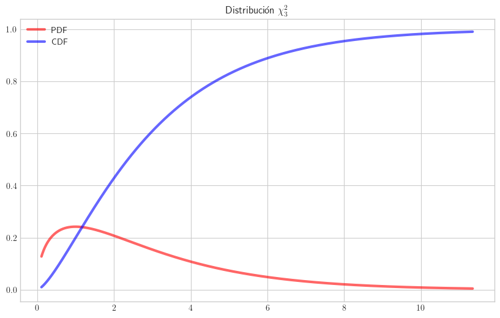
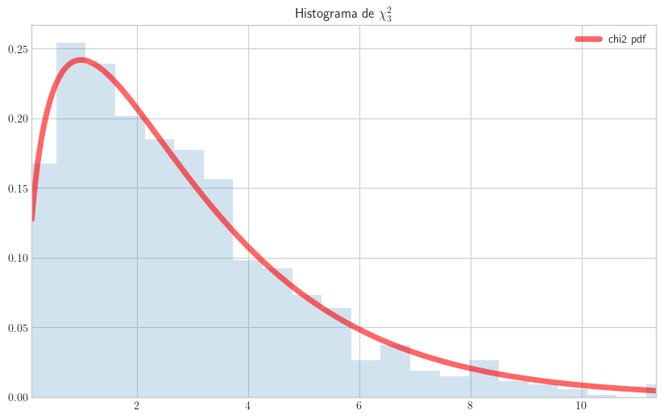
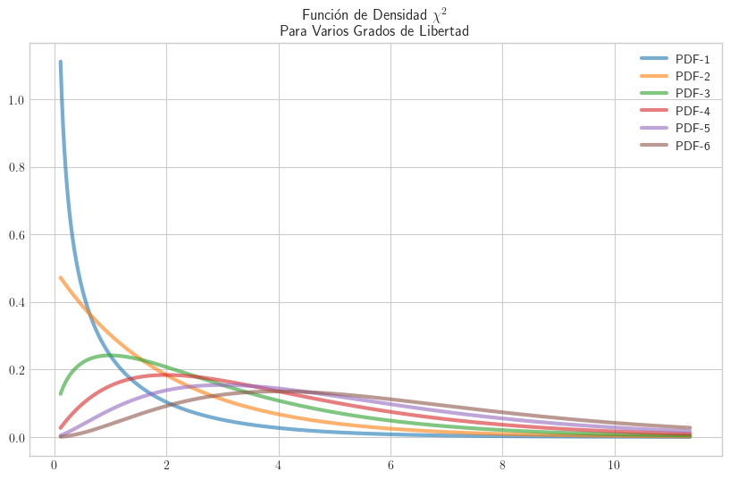

Distribución Chi-cuadrado#
Si se tiene una cantidad m de variables aleatorias distribuidas según una normal estándar, la suma de esas variables elevadas al cuadrado tiene distribución Chi-cuadrado con m grados de libertad.
\[\mathcal{Z_{1}}+...+\mathcal{Z_{m}}=\sum_{i=1}^m \mathcal{Z_i} \sim \chi_m^2\]
\[con\;\;\mathcal{Z_i} \overset{\text{i.i.d}}{\sim} \mathcal{N}(0, 1)\]
i.i.d: independientes e ideticamente distribuidas
Una variable aleatoria \(\chi^2\), con m grados de libertad, tiene como valor esperado m, moda \(m - 2\), siempre que \(m \gt 2\), y su varianza es \(2 \cdot m\).
import numpy as np
from scipy.stats import *
import matplotlib.pyplot as plt
plt.style.use('seaborn-v0_8-whitegrid')
plt.rcParams['text.usetex'] = True
plt.rcParams['figure.figsize'] = (10, 6)
A continuación las trayectorias de las funciones de densidad y densidad acumulada de una variable aleatoria \(\chi^2\) con tres grados de libertad.
gl = 3
x = np.linspace(chi2.ppf(0.01, df=gl),
chi2.ppf(0.99, df=gl), 1000)
fig, ax = plt.subplots()
ax.plot(x, chi2.pdf(x, df=gl), 'r-', alpha=0.6, label='PDF',
lw=3)
ax.plot(x, chi2.cdf(x, df=gl), 'b-', alpha=0.6, label='CDF',
lw=3)
#ax.margins(x=0.05)
plt.title('Distribución $\chi_3^2$')
#plt.xlim(0, 3.5)
plt.legend()
plt.show()

Para generar numeros aleatorios (o pseudo-aleatorios, más bien) con distribución \(\chi^2\).
np.random.seed(seed=0)
chi2.rvs(df=10, size=3)
array([19.21773132, 11.17115772, 19.95063752])
# help(np.random.chisquare)
np.random.seed(seed=0)
np.random.chisquare(df=10, size=3)
array([19.21773132, 11.17115772, 19.95063752])
Este ejemplo, tomado de la documentación, genera una muestra de 1000 valores \(\chi_3^2\).
r = chi2.rvs(df=gl, size=1000)
fig, ax = plt.subplots()
ax.plot(x, chi2.pdf(x, df=gl),
'r-', lw=5, alpha=0.6, label='chi2 pdf')
ax.hist(r, density=True, bins='auto', histtype='stepfilled', alpha=0.2)
plt.title('Histograma de $\chi_{3}^2$')
ax.set_xlim([x[0], x[-1]])
ax.legend(loc='best', frameon=False)
plt.show()

def plot(gl):
ax.plot(x, chi2.pdf(x, df=gl), alpha=0.6, label=f'PDF-{gl}',
lw=3)
plt.legend()
x = np.linspace(chi2.ppf(0.01, df=gl),
chi2.ppf(0.99, df=gl), 1000)
fig, ax = plt.subplots(1,1)
plt.title('Función de Densidad $\chi^2$\nPara Varios Grados de Libertad')
for m in range(1, 7):
plot(m)
